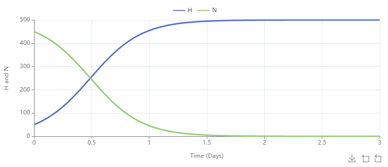

Dimension refers to the fundamental type of quantity we work with. Quantities may have dimension of length, area, volume, mass, time, etc. Units refer to a specific way of quantifying a dimensional quantity such as inches or feet for a quantity whose dimension is length. To specify units of a primitive in Insightmaker, observe that each stock, flow, or variable in Insightmaker comes with the button shown to the right in its menu.
Both dimension and units play by the same basic rules in ODE modeling. The important ones are as follows:
Quantities can only be added or subtracted if they have the same dimension. To add two quantities of the same dimension with different units, you generally need to convert one of them. Insightmaker does some common conversions automatically (see Example 1.3.2).
Dimensions and units can be combined via multiplication and division. For instance, velocity has dimension of distance/time and velocity\(\time\)time has dimension of distance. Often multiplication by variables in flow rates indicates the units of the variable for this reason.
If \(y\) is a function of time, then the units of \(y'\) are \(\frac{y\text{-units}}{\text{time units}}\text{.}\) For the purposes of Insightmaker, this means that if units are assigned to a stock, the units of each flow into or out of that stock must be the units of the stock per time unit.
are \(y\text{-units}\times t\text{-units}\text{.}\) Thus, if units are assigned to a flow you must assign units to its source or target stock accordingly.
Example1.3.2.Insightmaker Automatic Unit Conversions.
\(y\)\(m\)\(y\)\(m\text{,}\)\(m\)\(12\)\(1\)Figure1.3.3.An Insight for a linear function (with zero intercept) including units with the slope units converted automatically.
When building Insights you can always leave quantities unitless. In the example below we illustrate why it is a good practice to use units and how Insightmaker keeps you honest when you do.
For this model we will consider a population, with a fixed size of \(500\text{,}\) in which a rumor spreads. We will have two sub-populations of size \(H\) (for Heard) and \(N\) (for Not heard). Time will be measured in days and we will assume \(H(0)=50\) and \(N(0)=500\text{.}\) A common model for the rate of change in \(H\) is given by
\begin{equation*}
H' = kHN,
\end{equation*}
where \(k\) is some constant. The typical reasoning presented is that this model presents a scenario where if you scale up either sub-population, the rate of change in \(H\) scales up by the same amount. Since \(H+N = 500\) is constant, we have \(N' = -H'\text{.}\)
Create two stocks, \(H\) and \(N\text{,}\) with initial values \(50\) and \(450\text{,}\) respectively. Assign units of Individuals from the Ecology and Nature menu for units.
Create a single flow from \(N\) to \(H\text{.}\) This is possible because \(H\) and \(N\) have the same units and \(N'=-H'\text{.}\) After linking \(k\) to this flow, we can assign the flow formula [k]*[H]*[N]. Since the stocks have units of Individuals, we must assign the units of this flow as Individuals/Days.
The reason for this error message is that we left \(k\) dimensionless. Observing that \(H'\) is in units of Individuals/Days and \(HN\) is in units of Individuals\(^2\text{,}\) it must be the case that \(k\) has units of 1/(Individuals*Days). Making this assignment and letting \(k=0.009\) (see below why this might be the right order of magnitude for \(k\)), we obtain the following simulation:

Figure1.3.5.Graph of \(H\) and \(N\) when \(k=0.009\text{.}\)
Now let’s examine the units of \(k\) to better understand this model, which could theoretically help us improve it. We ask ourselves "What is the meaning of \(k\text{?}\)" We note the units of \(k\) are
Now we see that for each \(H\) individual, \(pqN\) individuals who have not heard the rumor will hear it. We then multiply by \(H\) to get the total number of individuals entering the \(H\) population per day. Thus, \(k = pq\text{.}\) The choice of \(k=0.009\) above was assuming \(p=0.01\) and \(q = 0.9\text{.}\)